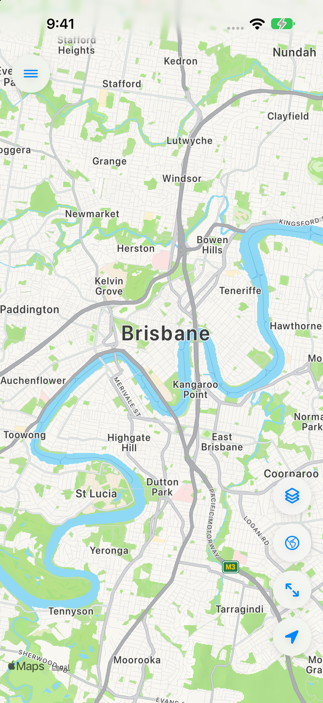
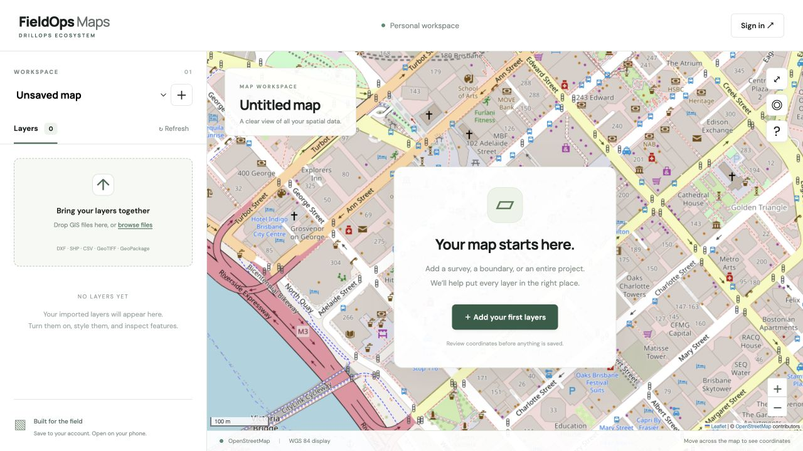

Build the project view.
Import your spatial data through the web portal. Check coordinates, organise layers and style the information so the work locations are easy to understand.
Prepare on the web / Share to the field
FieldMaps
Turn your project data into maps that workers and teams can use. Prepare, organise and publish in the web portal; open the latest published map in the iPhone app.
Work locations, access routes, boundaries and imagery belong together. FieldMaps makes that information easier to prepare, explain and distribute—so a worker can see where the job is, how it relates to the site and which details matter.

From a plan to a shared map
A supervisor should not have to describe every turn or send a collection of disconnected screenshots. FieldMaps gives the team a project map they can open and inspect for themselves.
Import your spatial data through the web portal. Check coordinates, organise layers and style the information so the work locations are easy to understand.
Publish a SYNC release when the map is ready. Control which operators can access the project through the organisation’s account permissions.
Workers sign in to the app, open their published map and use layers, feature details and their location to understand the job.
01 / Bring the project together
Your project information may start in different places: a drawing from the surveyor, a spreadsheet of work locations, an image of the site or a boundary file from the office. Bring those sources into a single project map and review how they fit together.

Import supported DXF drawings, coordinate CSVs, KML/KMZ, GeoJSON, zipped shapefiles, GeoPackages and georeferenced raster data. Review an import before adding it to the project.
Set a project coordinate reference system, inspect the source system and confirm the appropriate import settings. A file’s coordinate system can be used independently of the project default.
Switch between street, satellite and hybrid backgrounds in the web portal. Bring in supported GeoTIFF previews or add an HTTPS XYZ tile service when the project needs additional imagery.
Give layers useful names, arrange their drawing order and group related information. Keep work areas, access, boundaries and background layers easy to find as the project grows.
02 / Make the important details visible
Give each layer a clear purpose. Use colour, symbols, labels and feature details to help a worker distinguish a work location from an access point, or a planned area from a completed one.
Set point symbols and sizes, line colours and dashes, and polygon fills. In the web portal, classify values or numeric ranges to make patterns such as work status or depth visible.
Use a saved data field to label points. Configure the web feature display with useful titles, friendly field labels and a sensible information order.
Administrators can add map notes, access arrows and exclusion-area polygons in the web portal. Publish the changes when the updated project information is ready for operators.
03 / Look beyond the pin
A point on a map becomes more useful when you can inspect the information behind it. The web portal links the map and attribute table so planners can explore the data before sending people out.
Find matching values in visible layers. Look up a site identifier or a feature name without manually scanning the whole map.
Sort and search the web attribute table, select a record to locate its feature, or select a feature to find its row. Limit the table to the current map area when you need to focus.
Apply conditions or toggle categories in a layer legend to focus on a subset of the project. Explore the data without changing the original attributes.
Use the web measurement tools for approximate horizontal distances and areas while planning. These measurements provide context; they are not survey-certified calculations.
04 / Control the handover
Saving a draft and sharing it with operators are different steps. FieldMaps gives planners room to make changes, then a deliberate publishing step to release the map for field use.
Editors work on the project in the web portal. Drafts save as you work, with save status and an indication when changes have not yet been published.
SYNC saves pending changes and creates a published release. Later draft edits stay separate until you publish again, so operators are not viewing a plan halfway through an update.
Assigned users sign in and refresh to retrieve the latest published map available to them. They can inspect and personalise their view without editing the planner’s source project.
05 / The right map for the right people
Administrators manage people and project access. Editors prepare maps. Operators view the published projects assigned to them. These roles keep preparation and field use clear as more people join the work.
Invite people, manage account status and roles, and assign the projects an operator can access.
Prepare and maintain their project maps, organise the data and publish updates for field users.
View assigned published maps. Pan, zoom and control visible layers without changing source data or publishing a new version.
FieldMaps on iPhone
The app is a viewer for published project maps. Preparation and access management stay in the web portal, giving field users a focused way to view the information they have been assigned.
View published vector data, raster previews and supported map tiles. Switch layers on and off to focus on the job at hand.
Show your position, switch basemaps and inspect saved feature attributes to understand what a mapped point, line or area represents.
Adjust layer opacity and drawing order locally. These display changes do not change the published project data.
Open supported georeferenced GeoTIFFs from Files. Saved local originals and display resources stay on the device for the signed-in account.
Published website maps require a connection. Refresh to retrieve newly published releases. Local saved GeoTIFFs can be viewed on the device; some coordinate systems need an initial download. FieldMaps provides map-based directions and context, rather than turn-by-turn road navigation.
Where FieldMaps helps
Use FieldMaps when the team needs to understand the work spatially: where the destination sits, what surrounds it and which project information applies.
Put planned collars, site identifiers, access and project boundaries into a map a supervisor can publish for the next field visit.
Bring a site drawing and nominated work areas together so a contractor can inspect the location and its relationship to the rest of the site.
Prepare inspection locations, property context and asset records in the portal, then give the assigned team a clear map to open on their phones.
Before you start
FieldMaps is for preparing maps centrally and distributing published versions to workers and teams. FieldOps is a local, offline-capable GIS toolkit for working with your own spatial data, terrain, navigation and field records. Choose FieldMaps for the team handover; choose FieldOps for the broader on-device field toolkit.
No. Map preparation happens in the web portal. Workers use their assigned account in the iPhone app to view published maps and inspect feature information.
No. Draft changes are released using SYNC. Operators refresh to retrieve the latest published version. Publishing is a controlled handover, not live editing or an automatic push notification.
Operators can explore a published map and adjust their local view. They cannot edit the draft, upload project files or publish a new release. Preparation stays with the authorised editors and administrators.
Published website maps require a connection. The iPhone app can retain supported local GeoTIFF originals and display resources for the signed-in account. This is separate from downloading an entire published project for offline use.
No. The web portal provides map preparation, tables, filtering, styling and account administration. The iPhone app provides a focused viewer with layer visibility, opacity, drawing order, feature information and location. Some advanced web styling and grouped controls are not reproduced in the native viewer.
Confirm the source coordinate system and that the file contains supported spatial data. Current cloud imports allow up to 50 MB per file and 20,000 features per vector layer. Web rasters use display previews; unsupported formats or very large datasets may need preparation before import.
Access & availability
The iPhone app is free and requires an account. Your organisation manages published map access. Open the App Store for the currently available version.